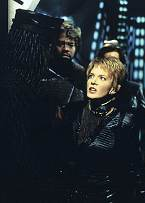
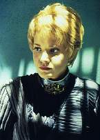
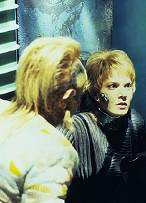
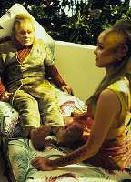

|
MANCHETE
DO EPISÓDIO
Kes, com o namoro em crise, se
transforma em tirano assassino
Episódio
anterior | Próximo
episódio
Sinopse:
Data
Estelar: 50348.1.
A
USS Voyager transporta a bordo três pessoas pouco antes de a nave
delas explodir: uma mulher Ilari
chamada Nori, seu marido ferido Tieran e um homem Ilari de nome Adin.
Embora o Doutor e Kes tentem salvar Tieran, ele acaba morrendo.
Pouco tempo mais tarde, Neelix fica chocado ao ouvir de Kes que ela
quer passar mais tempo sozinha. Quando a Voyager chega ao planeta
Ilari, o líder local, conhecido como "o Autarca", manda
um representante à nave ao invés de ir em pessoa.
Inexplicavelmente, Kes saca um feiser e mata o representante e um
membro da tripulação, escapando em uma nave auxiliar roubada com
Adin e Nori.
Kes leva a nave para um acampamento
militar e toma comando das tropas que lá a aguardavam. Enquanto
isso, Janeway se encontra com Demmas, o filho mais velho do Autarca,
o qual explica que o corpo de Kes está habitado por Tieran, um
antigo governante Ilarian que foi derrotado por um ancestral de
Demmas há 200 anos. Desde então, Tieran tem sobrevivido através
da transferência de sua mente a uma série de corpos hospedeiros.
Janeway concorda em ajudar Demmas a deter Kes/Tieran, mas antes de
conseguir fazê-lo, o tirano executa o Autarca na frente do irmão
mais novo de Demmas, Ameron, e se intitula o novo Autarca.
 Kes/Tieran
tenta envenenar os pensamentos de Ameron contra Demmas, visando levá-lo
a cooperar com o novo regime. Nesse meio tempo, o Doutor projeta um
estimulador sináptico que removerá os padrões neurais de Tieran
do corpo de Kes — se eles conseguirem se aproximar o bastante para
usá-lo. Tuvok se transporta para o palácio do Autarca, mas é pego
e aprisionado antes de tentar colocar o plano em prática. Quando
Kes/Tieran interroga Tuvok, o Vulcano consegue iniciar um elo mental
e falar diretamente com Kes, que lhe diz estar lutando com Tieran
para recuperar o controle.
Kes/Tieran ordena que a Voyager deixe
a órbita, mas o estresse da luta mental entre Kes e Tieran resulta
em um paranóico Kes/Tieran matando Adin. Para a tristeza de Nori, o
tirano anuncia um casamento com Ameron. Momentos depois, uma coalizão
entre a tripulação da Voyager e as forças de Demmas invade o palácio.
Paris liberta Tuvok, enquanto Neelix coloca o estimulador sináptico
em Kes/Tieran. Tieran pula para um novo hospedeiro — Ameron —
mas Kes coloca o aparelho nele e Tieran é finalmente destruído.
Demmas, o herdeiro legítimo, se torna o Autarca.
Comentários:
O episódio obviamente trabalha Kes,
mas a participação de outros personagens não deve ser deixada de
lado. Tuvok é abordado sobre suas emoções reprimidas, Neelix é
analisado sob a perspectiva de Kes (a qual, convenhamos, é muito
semelhante à dos telespectadores), e B'Elanna, bem, mostra algumas
facetas nunca antes vistas, na cena do holodeck.
 A
história começa a se desenvolver bem, até o ponto em que o
representante Ilari se transporta à Voyager. Já virou de praxe a
tripulação não conseguir conter uma violação da segurança.
Francamente, a performance de Tuvok e sua equipe deixa a desejar.
Por que eles nunca conseguem deter a fuga dos intrusos? Mas o mais
grave: como Tieran conseguiu manipular os sistemas da Voyager com
tanta eficácia? Embora tivesse se apossado do corpo e de parte dos
conhecimentos de Kes, o domínio dela sobre os sistemas da nave é
bastante limitado. A seqüência do roubo da nave auxiliar é a
prova de que a tripulação precisa passar por um novo treinamento.
Eles não conseguem nem detê-la nem persegui-la.
A explicação para isso é muito
parecida com aquela dada à habilidade de Tieran saltar de
hospedeiro para hospedeiro. Como de costume, a habilidade existe,
mas o roteiro falha em fornecer uma explicação crível.
Felizmente, o que se sobressai no
episódio é a atuação de Jennifer Lien. Aliás, parece que a
exploração do potencial do elenco na interpretação de estilos
diferentes tem sido uma das preocupações dos produtores nesta
temporada. É só lembrar de Roxann Dawson em "Remember".
Lien convence pelas expressões faciais e pelo uso da voz. Para
muitos, Kes, embora carismática, é apagada. Aqui a atriz encarna
um personagem muito mais forte do que o que vem interpretando há três
temporadas.
 Com
certeza foi uma tentativa de desenvolver Kes. Ela estará em evidência
como nunca antes, em diversos episódios do terceiro ano. Mas o
telespectador estará sendo exposto a um desenvolvimento tardio e
muito rápido. As habilidades mentais da personagem, que
permaneceram em dormência por meses --aparecendo ocasionalmente--
serão super-utilizadas até o final da temporada. Isso porque a
essa altura na série a saída de Lien do elenco fixo já era uma
certeza. A partir de então, o enfoque, a forma de se contar histórias,
--tudo--, mudaria dramaticamente.
Sobre Tieran, ele é mais um ditador
obcecado pela imortalidade, que acaba colocando a Voyager no meio de
uma guerra civil. Mesmo se a Kes não tivesse sido envolvida na história
toda, o episódio acabaria tratando indiretamente da Primeira
Diretriz. A tripulação mais uma vez pára a viagem a fim de salvar
um grupo de alienígenas desconhecidos, que por coincidência são
rebeldes lutando contra o governo.
 A
inocente Kes é forçada a presenciar atrocidades e acaba
despertando sentimentos dentro si nunca antes experimentados. Muito
do que Tieran fez se refletiu em Kes. Ele usa da sedução como
instrumento para chegar ao poder, e no corpo de uma mulher atraente
sente-se particularmente capaz. Ela
sai mudada dessa experiência. "Quanto mais se luta contra um
inimigo, mas você se parece com ele". Ela luta por uma causa
nobre, mas sai endurecida e com cicatrizes, incapaz de retomar a
vida como a conhecia.
Por fim, vale a pena falar do novo
programa de holodeck. Ele aparecerá bastante nesta temporada, e
renderá uma história própria envolvendo Tuvok. De tempos em
tempos a série substituirá os cenários do holodeck e os usará em
tramas secundárias. Portanto, o telespectador pode esperar por mais
mulheres andando de biquíni em Voyager...
Citações:
Neelix - "I wasn't sure you'd
enjoy the program with the new modifications Harry and Tom added."
("Eu não tinha certeza que você ia gostar do programa com
as novas modificações que Harry e Tom adicionaram.")
Torres - "Well, I've made a few modifications of my own."
("Bem, eu fiz as minhas próprias modificações.")
Kes - "It might be a good
idea if both of us should spend some time apart."
("Talvez fosse uma boa idéia se nós passássemos algum
tempo separados.")
Kes - "I've been exploring
the mind of this little girl and I've discovered some interesting
abilities."
("Estive explorando a mente desta garotinha e descobri
algumas habilidades interessantes.")
Trivia:
 Aqui é vista a primeira aparição do programa "South Seas
Island holiday resort" no holodeck.
Aqui é vista a primeira aparição do programa "South Seas
Island holiday resort" no holodeck.
Repare nos pés de Neelix que são mostrados aqui. Eles são muito
diferentes dos mesmos pés do personagem quando mostrados em "Caretaker".
Desde "Basics, Part II"
mais ninguém havia morrido em Voyager. Aqui é a vez do
alferes Martin perder a vida.
O ator Brad Greenquist (Demmas)
também apareceu em Deep Space Nine, como Krit, no episódio "Who
Mourns for Morn".
Karl Wiedergott (Ameron) apareceu
em "Dear
Doctor", da primeira temporada de Enterprise,
como Larr
A terceira temporada de Voyager vê o fim do romance entre
Neelix e Kes, algo que aconteceu fora das telas. Aqui temos a
primeira indicação de que o relacionamento não anda bem das
pontas.
Ficha
técnica:
História de Andrew Shepard Price &
Mark Gaberman
Direção de David Livingston
Roteiro de Lisa Klink
Exibido em 20/11/1996
Produção: 052
Elenco:
Kate Mulgrew como
Kathryn Janeway
Robert Beltran como Chakotay
Roxann Biggs-Dawson como B'Elanna Torres
Robert Duncan McNeill como Tom Paris
Jennifer Lien como Kes
Ethan Phillips como Neelix
Robert Picardo como Doutor
Tim Russ como Tuvok
Garrett Wang como Harry Kim
Elenco convidado:
Anthony Crivello como Adin
Brad Greenquist como Demmas
Galyn Gorg como Nori
Charles Emmett como Resh
Karl Wiedergott como Ameron
Leigh J. McCloskey como Tieran
Episódio
anterior | Próximo
episódio
|